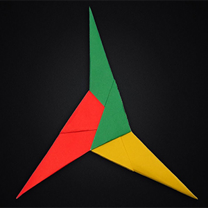
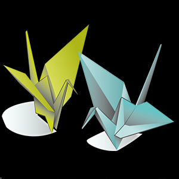

Tri-Shuriken
- The shuriken is a Japanese concealed weapon that was used as a hidden dagger or metsubushi to distract or misdirect.
- They are also known as throwing stars, or ninja stars, although they were originally designed in many different shapes.
- The major varieties of shuriken are the bō shuriken and the hira shuriken or shaken.
Lily in a Pot
- Lilies are resourceful flowers and can develop from bulb or seed both.
- They grow anywhere between 2 to 6 feet.
- Apart from white, yellow, red, and pink lilies, there is something called Tiger Lily that is orange in color and carries brown spots or freckles.
- Lilies are quite extrovert and social. It cannot grow well alone. Put them in a group of 4 or 5 and see how fast and brilliantly they grow.

Paper Crane
- Cranes are known as the world’s tallest flying birds. They can grow tall up to 1-1.8 meters. They vary between 35-69 inches in length and 6-12 pounds in weight.
- The Demoiselle Crane is the smallest crane species, while the Sarus Crane is the tallest crane species. The Red-crowned Cranes are known to be the heaviest species of all.
- It is usually harder to distinguish male cranes from the females as there is not much difference. However, average males are usually a little bigger than the females
Paper Mask
- Masks can prevent the spread of the respiratory droplets that transmit COVID-19. With the overall amount of droplets in the air reduced, and thus less of the virus in the environment, it reduces the risk of COVID-19 being spread.
- Wearing one does reduce your likelihood of spreading it to others, and it may provide some level of protection for you, as well.
- Most masks are reusable and washable.

Dragon Bookmark
- In China, dragons symbolize wealth, power, and leadership. Also, emperors were believed to be descendants of dragons
- A little dragon is called a "dragonet." However, in mythology, smaller dragons were often more fierce and deadly than larger ones.
- One of the most iconic dragons in literature is Smaug, from J.R.R. Tolkien's classic novel The Hobbit.
Paper Eagle
- Eagles are some of the largest birds. They are at the top of the food chain, with some species feeding on big prey like monkeys and sloths.
- Eagles have amazing eyesight and can detect prey up to two miles away.
- Eagles are birds of prey in the family Accipitridae; there are approximately 60 different species. The majority are found in Eurasia and Africa, with only 14 species found in other areas including North, Central and South America, and Australia.